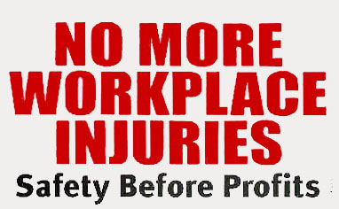

I Am Tired of Healthcare
Submitted on Sun, 08/09/2015 - 3:51pm
By Luz Sierra - Miami IWW, August 5, 2015
Five years had passed since I first began working as a Certified Nursing Assistant (CNA). A CNA is a health care provider that assists Registered Nurses (RN’s). They are the ones considered to do the “dirty work” in healthcare: changing, bathing, feeding, and providing any form of assistance to patients that RN’s do not have the time or opportunity to provide in today’s fast-paced and multi-tasking health care environment. Through providing care to patients, I have seen many of the atrocities of today’s society, especially with mental health.
The past year I was offered a patient companion (sitter) position at a local hospital after being laid off at my previous workplace for organizing. It is a pretty chill job. Depending on the census, I either provide one-to-one care or one-to-two patients care who are at risk to fall and are under Baker Act (a Florida mental health law that forces a patient to remain in the facility and to be under supervision up to 72 hours because of potential harm to self or others), or high risk patients likely to be injured. Throughout the majority of my employment there, I have mostly seen patients with mental health disorders. Among them are the elderly that are diagnosed with dementia or Alzheimer’s disease. In my experience, they are not given enough or any treatment at all. They are only given medication that sedates them for hours or they are simply ignored by RN’s. An individual with such an ailment could become very anxious, agitated, and disorientated which leads to many problems. For instance, they often attempt to get out of bed unsafely due to memory loss, they can remove their intravenous therapy (IV) if they are bothered by it, and they will sometimes attempt to physically hurt people they do not recognize as they become anxious and fearful of everyone. The list can go on. Mental health disorders are not easily treated, so there are moments when you will need help from CNA’s, RN’s, or even administration. Unfortunately such help is non-existent at times, like one day at work when I was assigned a patient that had Alzheimer’s and was extremely confused.
On that day I received the patient in a difficult situation. The first moment I arrived to her room, she was already punching and kicking the CNA who was trying to prevent her from getting out of bed. The CNA warned me to be careful since she was very combatant; she wasn’t lying. I spent the first two hours preventing her from getting out of bed while she attempted to repeatedly punch and kick me. Eventually a physical therapist stopped by and walked her to the bathroom and around the room. Afterwards, the nurse provided her medication that calmed and reoriented her. After taking her medication, the patient began to talk to me kindly, telling me about her life until she fell asleep for about thirty minutes. When she woke up, the medication was no longer effective so she was agitated and confused again. She wanted to leave her room, but wasn’t allowed to, so she was pushing and hitting me, and screaming loudly for help. I wanted to back away from her since that’s what you are taught when dealing with an aggravated patient, but I couldn’t as she was trying to get up and placing herself at risk of falling. I called the nurse to tell her what was happening, but all she did was stop by and talk to the patient. When she left, the patient became aggressive again.
During the next three hours I called the nurse five times, but she didn’t do anything other than try to calm the patient through talking to her. There’s no problem with that but if the patient is hurting herself and trying to attack caregivers there should be a better alternative. I am not a big advocate of medication, but in my opinion, it’s better to sedate a patient in order to prevent any further harm if the RN is not going to be there 24/7 and if a patient companion has limited options to prevent a patient from hurting anyone or herself. Luckily, another nurse stopped by and took the patient to visit her husband who was also hospitalized. I was ordered to stay with her as she visited her husband. She was calm for a while, but then became agitated and wanted to leave the room in order to search for her children who weren’t there. I had to take her back to her room where she didn’t want to stay, and spent another three hours walking back and forth from her room to her husband’s room. Along the way she would hit and scream at me while the nursing staff were all watching and did nothing.
During the final hours of my shift, no one did anything to stop her violent behavior and I continued to endure the abuse. I was told to keep her seated by placing a table in front of her chair and placing my body weight on it, but I was not comfortable with doing that. Carrying out that order could be illegal assault and I didn’t want to restrain the patient without an order by a physician. Therefore, I gave up asking for assistance and just endured being beaten and hit, watching the clock through the final hours of my shift.
I was trapped for ten hours being abused while no one even tried to help me restrain a patient that was clearly hurting me. This left me upset, miserable, and extremely tired at the end of the day. No healthcare worker should experience this. Workers have rights as well and to force us to endure abuse like this is insane. Unfortunately I can’t say this was my first time.
Many patients have behaved the same way and some even worse. One Baker Acted patient was constantly attempting to leave the hospital, was spitting everywhere, trying to hit me, and even masturbated in front of me. It took the nurse three hours before she physically restrained him even though the manager of security enforcement was demanding the nurse to intervene. He was clearly upset and couldn’t believe that the hospital lacked proper procedures or an area (there isn’t a psychiatric department in that hospital) for patients in such conditions.
After supervising the patient that abused me for ten hours, I was without a doubt tired of such mistreatment to the point that I was considering leaving this field. The health care system is horrendous. If no one gives a shit about a patient being neglected, abused, or ignored imagine what a worker experiences! This system is more concerned about profit than the lives of the people who live under it. Higher-ups, ass kissers, and wealthy patients are the only ones reaping the fruits of our misery. Everyone else is lucky enough to leave the hospital with a taste of hope left in this world.
Ten dollars an hour without benefits is not worth the abuse. No wage is worth working under such circumstances. There needs to be a way to restructure this system. Calling government agencies that supposedly oversee the health care system, like OSHA, doesn’t work because they barely inspect every few years let alone have enough funding to make spot checks. They’re controlled by the same people they are supposed to be monitoring through industry lobbying, appointments, and the extensive ties between industry and Washington. Whatever semblance of laws there are to regulate hospitals they lack any way to have clear enforcement and clearly are written for the companies that run the industry.
That’s why workplace organizing should be our solution. Healthcare workers may be separated by different schedules, pessimism, and fear, but there are countless examples from the past and today where workers from hospitals unite and demand the changes that are needed. Hopefully one day healthcare employees will be able to rebuild a system that provides preventive care, takes mental health more seriously, and treats patients and workers as human beings rather than vessels of profit. I hope that day will come soon.
Maybe sharing this story could be a first step. The first action that could end the fear of not being silent, the torment of being alone in this field, the lack of hope among healthcare workers when facing unfair conditions, and overall the lack of inspiration to fight back and build a system workers desire. Therefore, I’ll continue to stick around as long I stand strong and my desire to see change is alive.